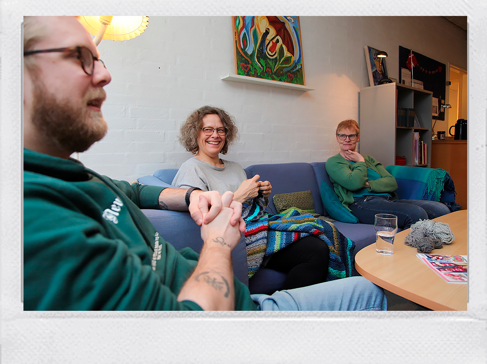

Mød en gæst
Besøg Café Parasollen og bliv mødt af andre mennesker


Café Parasollen er et frirum-Philip, 44år

Vi bekymrer os for hinanden-Veyis, 39år
Se video om hverdagen i Café Parasollen
Café Parasollen er en social cafe - et værested - for mennesker med forskellige udfordringer i livet. Det er også en arbejdsplads for mange mennesker, som ønsker at være med til at tage et ansvar - både for sig selv - og for det arbejde, der foregår til gavn for andre.

Bliv friviillig i Café Parasollen
Der er cirka 40 forskellige frivillige, som i hold af 4-5 timers vagter løser dagens opgaver, det være sig madlavning, bagning, fremstilling af smørebrød, rengøring og ikke mindst samvær og samtale med gæsterne.
Åbningstider
Mandag kl. 9.30-21.30
Tirsdag kl. 9.30-15.30
Onsdag kl. 9.30-15.30
Torsdag kl. 9.30-15.30
Fredag kl. 9.30-15.30
Lørdag lukket
Søndag kl. 11.30-15.00